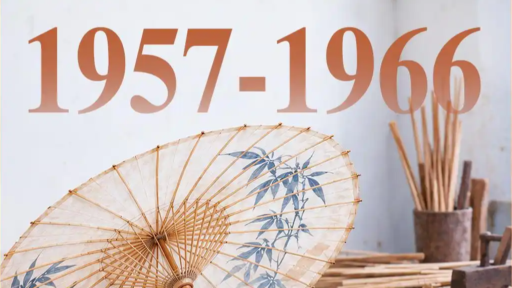

1957年10月，首届广交会在广州中苏友好大厦举行。据广州日报旗下报道，70年后，2026年10月15日广州迎来第140届广交会，展览总面积达155万平方米，超3万家企业参展，第一期聚焦"先进制造"，工业机器人、新能源汽车、智能制造设备集中亮相。
一组"70年热门单品大变迁"的盘点在网上走红：从漆器、纸伞、自行车、牛仔裤，到空调、无人机、机器人——广交会这个被誉为"中国外贸晴雨表"的展会，用70年记录着中国制造从弱到强的转身。
把全球客商的"购物车"往回翻70年，看到的不是孤立的商品，而是一部以货物写就的产业编年史。
所以广交会的热度，从来不只是成交额，而是每一代"什么最抢手"背后那条产业升级的曲线。
表层看，是展会历史悠久、客商云集；但更深一层，是广交会恰好卡在"中国与世界贸易"的咽喉位置。改革开放前，它是打破封锁、换取外汇的重要窗口；改革开放后，它成为"中国制造"走向全球的第一展台。
更关键的是，广交会的展品结构本身就是一面镜子。当早期靠"手工+低成本"圈粉，后来靠"规模+供应链"取胜，如今转向"智能+自主技术"，每一次单品更替，都对应着国内产业能力的跃迁。从土特产到机器人，变的货物，更是产业的话语权。
这也是为什么"广交会70年"能引发共鸣：它把抽象的"转型升级"，具象成了一件件看得见、摸得着的商品。
真正的"晴雨表"不是人流量，而是展台上什么在变贵、变精、变聪明。
从产业视角看，广交会的变迁揭示了一个清晰逻辑：低要素成本的优势会递减，真正可持续的，是技术积累与品牌能力。当工业机器人、新能源车成为主角，意味着中国制造正从"代工输出"走向"系统输出"。
但也要清醒：高端装备的亮相不等于全面领跑，核心零部件、软件生态、全球渠道仍是短板。广交会的热闹，是成绩也是鞭策——它提醒企业，下一轮竞争不在"更便宜"，而在"更不可替代"。
对普通人来说，这场70年变迁最实在的启示是：我们手里的"国货"早已不是廉价代名词，而一个国家产业的底气，正藏在这些年年更新的展台里。
70年翻过的不是购物车，而是一条从"会被卡脖子"到"能造硬骨头"的路。
回到1957年那张首届广交会的照片：纸伞、漆器、自行车，朴素得近乎寒酸；再看2026年展馆里的机器人，中间隔着整整70年。
广交会70年最动人的，不是某一届多热闹，而是它把"中国制造"四个字，一年年写出了新的含义。从卖手艺到卖技术，从拼价格到拼体系，这条路还长。但只要展台上仍在一年比一年更"聪明"，我们就有一切理由对它保持信心。